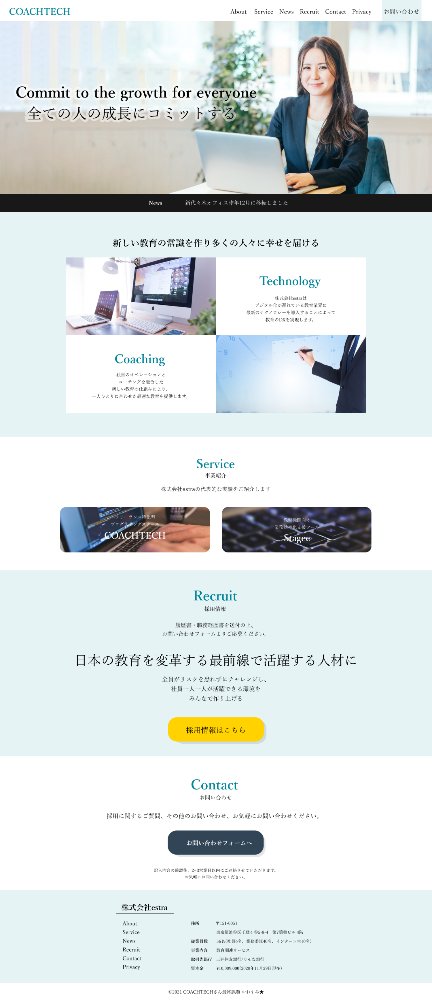

Works２
制作物のご紹介

- サイト制作の経緯・会社概要
-
株式会社estraの企業サイト(架空)
プログラミングスクールCoachtechさんの卒業制作として制作しました。
【株式会社estra】
「すべての人の成長にコミットする」を企業理念に掲げ、ITと教育をかけ合わせた企業。
新卒採用・中途採用ともに積極的に行う。 - 制作の目的・目標
- 教育とITを掛け合わせた魅力的な企業であることを伝える。
採用・広報の強化を目指す。 - ターゲット
- エンジニア転職・新卒入社を目指す20代～30代
- 制作期間
- 2021年9月より2.5ヶ月
- 担当したこと
- デザイン・コーディング(HTML・CSS・jQuery ・JavaScript・WordPress化)
- 制作の思い出・意識した点
-
要件定義が決まっている中で、初めてデザインから作成したサイトです。
本格的なサイトデザインは初めてで、ものすごく苦労しました。
デザインに関しては指導を受けておらず、自分の力だけでは限界を感じ、MENTAでプロの方にデザインの添削を依頼し完成させました。
デザインツールの使い方から余白の取り方、フォントサイズ、色の使い方やバランス、デザイン面で多くを学べた課題でした。
クライアントさんに運営していただける設定で、WordPress化まで行いました。
当時自らデザインしたもの(恥)

添削いただいて完成できたもの(トップページ)
